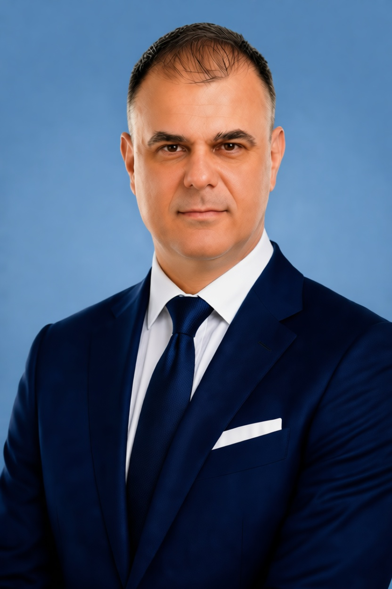

Enterprise Integration
Event-driven architecture, Kafka, IBM MQ, APIs, ESB and interoperability governance.
Hello, I'm Sefik Egriboz.
Solutions Architect experienced in airline IT, connecting enterprise integration, data platforms, mission-critical operations and AI-enabled solutions.

I have spent my career where technical architecture meets operational reality: developing and evolving systems that support thousands of daily airline activities, continuous data exchange and decisions that need to be right in real time.
From legacy modernization to event-driven integration, from airline operations platforms to graph-based AI, my work combines hands-on engineering, enterprise-scale design, technical leadership and delivery ownership.
What I'm looking for: senior Solutions Architect, Product Owner and Delivery or Programme Manager roles in airlines, aviation technology and enterprise platforms, where integration, data and AI have to run reliably in production.
I do my best work when I genuinely enjoy the challenge. That is what keeps me learning, exploring new technologies and strengthening the skills needed to solve real operational problems.
I value sharing what I have learned and helping the people around me grow, personally and professionally. In technical work especially, lasting progress depends on mutual trust: being able to rely on one another, take ownership and follow through.
“Reputation is the most important value in my professional life.”
Built through integrity, consistency, accountability and keeping one's word.
More meaningful than any title is being known as someone others can trust, respect and depend on. I look for technically challenging environments where I can contribute experience, continue learning and create lasting value without compromising those principles.
Event-driven architecture, Kafka, IBM MQ, APIs, ESB and interoperability governance.
Operational data stores, canonical models, graph neural networks and production AI.
Scheduling, flight planning, operations control, NetLine and airline data standards.
Roadmaps, solution ownership, vendor evaluation, multidisciplinary teams and execution.
My primary focus is permanent senior roles in solutions architecture, aviation IT and technical product leadership. Explore five perspectives on the same production experience, each with a dedicated PDF CV.
Designing event-driven, API-first integration and data platforms for always-on enterprise operations.
Download this CVSelected initiatives summarized from the five role-focused CVs. The project descriptions highlight reported outcomes rather than independent third-party validation.
Reframed callsign assignment as a quadratic assignment problem and built a graph-based AI solution using Neo4j, Graph Attention Networks and PyTorch Geometric.
Standardized enterprise messaging, streaming, API architecture and governance across a large and continuously running integration landscape. Delivered 99.8% availability, including planned maintenance windows, for the mission-critical platforms, and cut new-integration lead time from one week to one day.
Designed and built two Tier-0 operational data platforms that became authoritative sources for schedule, flight and operational flight-plan data, taking delivery from next-day to near-real-time and replacing 70 separate flight-data interfaces.
Engineered a system to cross-check planned flight routes with 72 automated checks and alarms before dispatch.
Developed a multi-currency cost consolidation and calculation engine using flight route, country entry and exit, and segment distance information.
Set roadmaps for six operational systems and led a five-vendor evaluation for a €1.5M platform decision, including shortlisting, proof-of-concept work and business cases.
Note: Metrics and outcomes are stated as reported in the supplied CVs. Availability figure of 99.8% includes planned maintenance windows.
A continuous progression from hands-on software development into enterprise-scale architecture, technical leadership and product direction.
Career break · Istanbul
Planned break for family and structured upskilling: Harvard's CS50 AI (12 Python projects), AWS AI and cloud certifications, PSPO I and continued research on graph-based approaches to aviation safety.
Turkish Technology
Distinguished Expert; production AI for callsign safety, operational platform architecture, technical strategy and vendor assessments.
Turkish Technology
Integration governance across 200+ points, event-driven modernization, architectural standards, high-availability platforms and Scrum-based agile delivery.
Turkish Airlines
Built and evolved TKAODS and OFPDS, led mission-critical architecture, acted as platform product owner and managed delivery.
Turkish Airlines
Airline schedules integration, SchedConnect, real-time integration frameworks and the overflight cost engine.
Turkish Airlines
NetLine production implementation, mainframe modernization, application engineering and enterprise integrations.
Event-driven architecture · Apache Kafka · IBM MQ · ESB/SOA · REST/SOAP · API governance · Resilience patterns
Operational data stores · Canonical data models · ETL/ELT · Oracle · Neo4j · PyTorch Geometric · Graph neural networks
NetLine · IOCC · Flight planning · Schedule management · SchedConnect · IATA SSIM · PSS/DCS integration
Java · Python · C · PL/SQL · Linux/Unix · Git · Jenkins · UML · HLD/LLD · ADRs · SLA/SLO · Architecture reviews
Technical education, management perspective and professional qualifications across architecture, delivery, cloud and AI.
For permanent-role and recruitment conversations, start here. Five downloadable PDF CVs highlight different strengths across one career.
Enterprise integration · API & data architecture · AI-enabled solutions
Schedule management & distribution · Operations control (IOCC) · Flight operations & flight planning
Enterprise integration · Data platforms · AI-enabled solutions
Product strategy · Agile delivery · Airline IT & data platforms · Program & delivery leadership
Programme delivery · Enterprise integration · Digital transformation
My primary focus is a permanent role in solutions architecture or technology leadership. I also consider selected, clearly scoped advisory and interim engagements grounded in production systems. For recruitment, start with the five CV profiles.
Swipe to see the full diagram →
For airlines and enterprises whose integration landscape has grown faster than its governance.
For operations, scheduling and flight-planning teams facing a platform renewal or vendor decision.
For operations and safety teams that want to test where AI can solve a real operational problem.
A defined question, a findings report and a recommended path.
Hands-on ownership of an architecture or platform for a set period.
Architecture reviews, design challenges and team workshops.
Have a platform or integration question? Write to sefik@sefikegriboz.net with a short description and I will reply with how I would approach it.
Discuss an engagementOutcomes are stated as reported in the supplied CVs, as elsewhere on this site.
Open to conversations about solution architecture, aviation technology, enterprise integration, AI-enabled systems and technical product leadership.